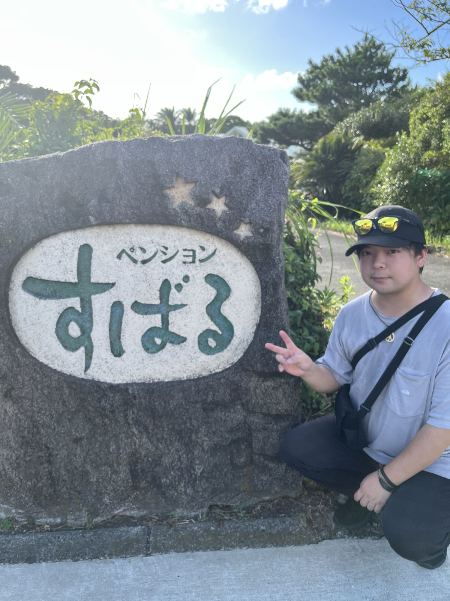
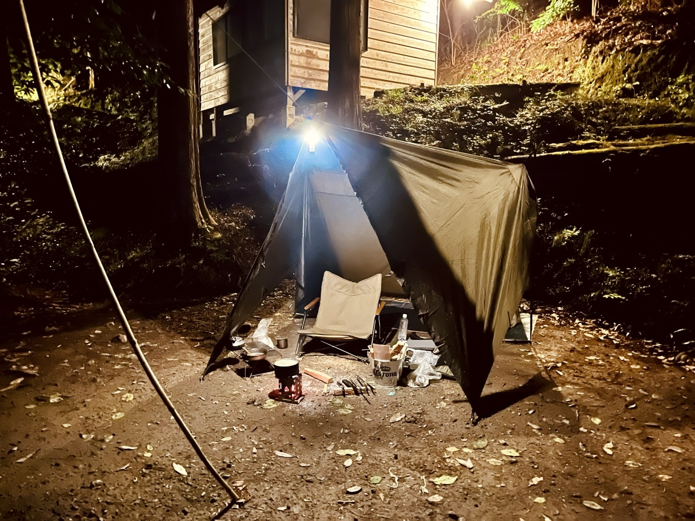
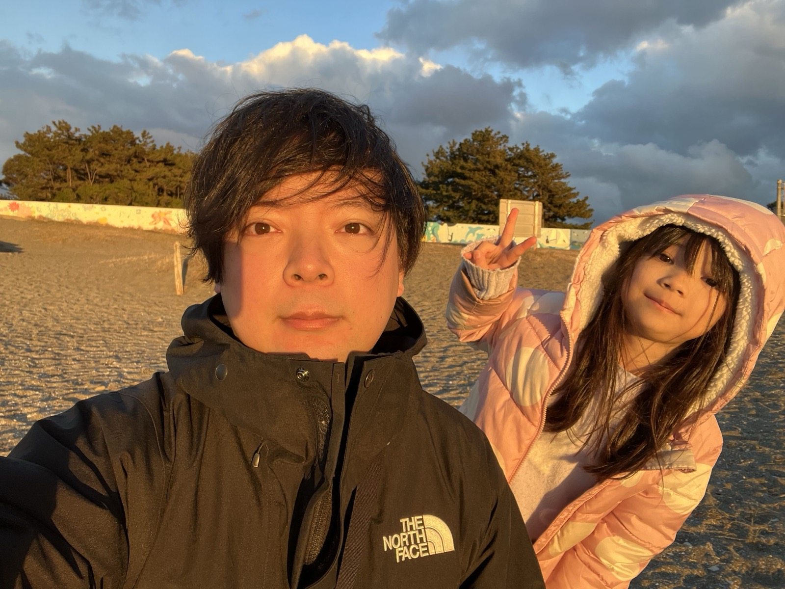

株式会社ライトアップ 経営コンサルティング局
Jマッチエンジン ／ OEM提供 担当

LENDING × OEM
SATO SUBARU
「お金がない」を、
AI化しない理由にさせない。
MY MISSION
信用金庫で法人融資の営業をしていました。決算書を読み、社長の話を聞き、お金を貸すかどうかを決める仕事です。営業1位を取り、主任まで進みました。その現場で毎日のように聞いていたのが、「お金がないから、それはまだ先で」という一言でした。
ライトアップへ移ってからは補助金部門を立ち上げ、申請の支援をしてきました。ただ、代行は一度きりで終わります。書いてもらった会社は、翌年また同じところで止まってしまいます。数字は残っても、その会社に力はつきません。
いまの担当はJマッチエンジンのOEM提供です。使える制度を毎週お届けし、6つのAIエージェントと話しながら、経営者ご自身が事業計画書を書けるようにします。私が人力でやってきた「構想を聞き出し、組み替え、言葉にする」を、そのままAIへ載せ替えたものだと思っています。
お客さまと直接やりとりする機会は、いまはほとんどありません。御社の看板でこの仕組みを配っていただき、その先のお客さまが「お金がない」で止まらなくなるところまでが、私の仕事の範囲です。

整ったキャンプ場より、タープを張って火を起こすくらいの、簡素なかたちが好きです。道具は増やすより減らす方向へ。夜、火を見ながら何もしない時間のために行っています。
野営できる場所を探しています。ご存じでしたら、ぜひ教えてください。旅先で、自分と同じ名前の宿を見つけました。「昴」は、そう多い名前ではありません。思わず看板を指さして撮った一枚です。商談でお名前の読み方をうかがうことが多いので、この話はよく使います。

休みの日は、だいたい娘と外に出ています。海でも公園でも、本人が走り回れる場所なら機嫌は上々。この写真は冬の海辺で、風は冷たかったのですが、なかなか帰りたがりませんでした。
家では自分で作ることが多いです。段取りを組み、火加減を見て、決まった時間に出す——やっていることは仕事と変わりません。ただ、こちらのほうが結果がすぐ出るぶん、気が楽です。
商談で間が空いたときは、このあたりを振ってください。だいたい話が伸びます。
主にお話しするのは、すでにお客さまをお持ちの会社です。Jマッチエンジンを御社の看板で配れる形にしてお渡しし、その先のお客さまを支える、という組み立てになります。申請書類の作成代行は行いません。有資格者の領域だからです。
御社のロゴと名前で、補助金・融資・税制優遇の情報が毎週自動で届く仕組みを配れるようになります。開発もサーバーも問い合わせ対応も、こちらで持ちます。御社は「毎週、役に立つ会社」という立ち位置を得る形です。
補助金が該当したという通知と同じ一通の中に、「この対象経費に使えます」と御社の商材が並びます。予算の目処が立った瞬間に、御社の名前が出る設計です。売り込みの回数を増やすのではなく、タイミングを合わせにいきます。
ホームページ制作会社、広告代理店、AI営業代行会社。新しい事業そのものを、AIエージェント込みの一式でお渡しします。人を採ってから始めるのではなく、先に回る形を持ってから人を足す順番です。
ライトアップへ直接いただくご相談には、私たち自身がJマッチエンジンを動かしてご説明します。「何から始めればいいか分からない」という段階でも、代わりに書くことはしません。ご自身で事業計画書を書ける状態まで、AIエージェントと一緒に伴走します。
補助金・助成金は審査を伴う制度です。採択や受給を保証するものではありません。ある商材が対象経費に当たるかどうかの最終判断は、制度の事務局が行います。
「うちのお客さまに配れるか」の一言からで大丈夫です。御社の商材と競合する部分は外せますので、そこも含めてご相談ください。
株式会社ライトアップ 経営コンサルティング局
佐藤 昴（すばる）